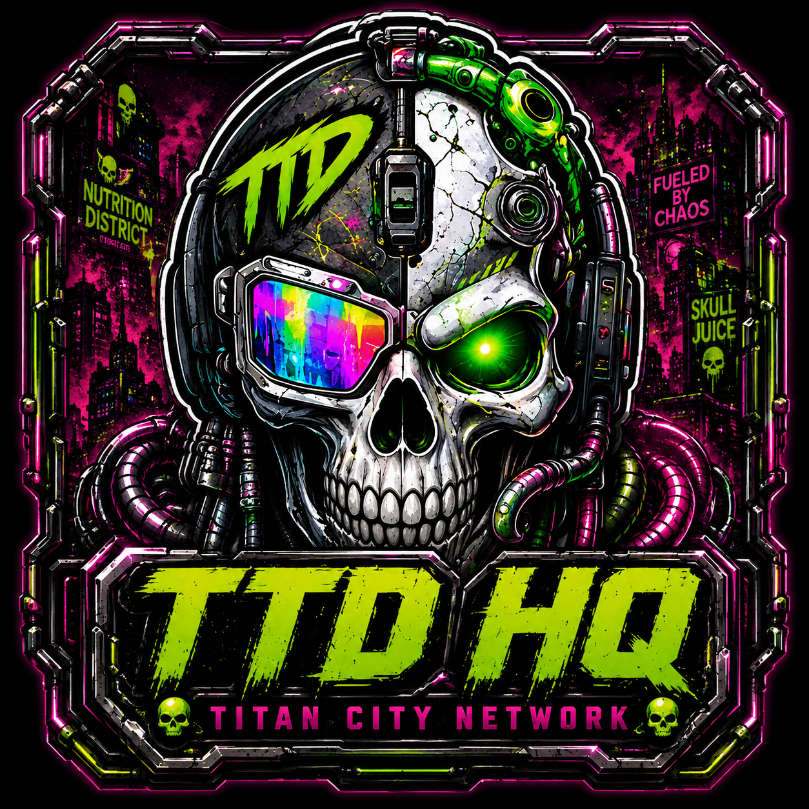
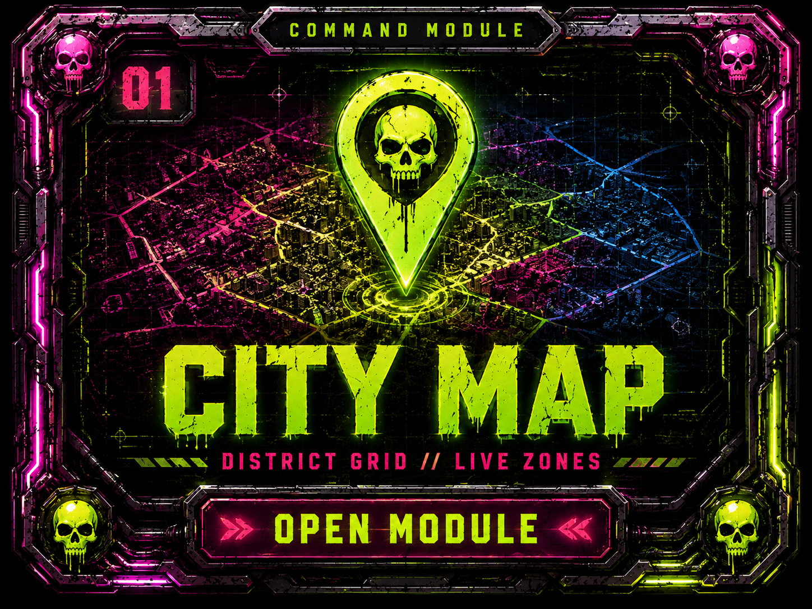
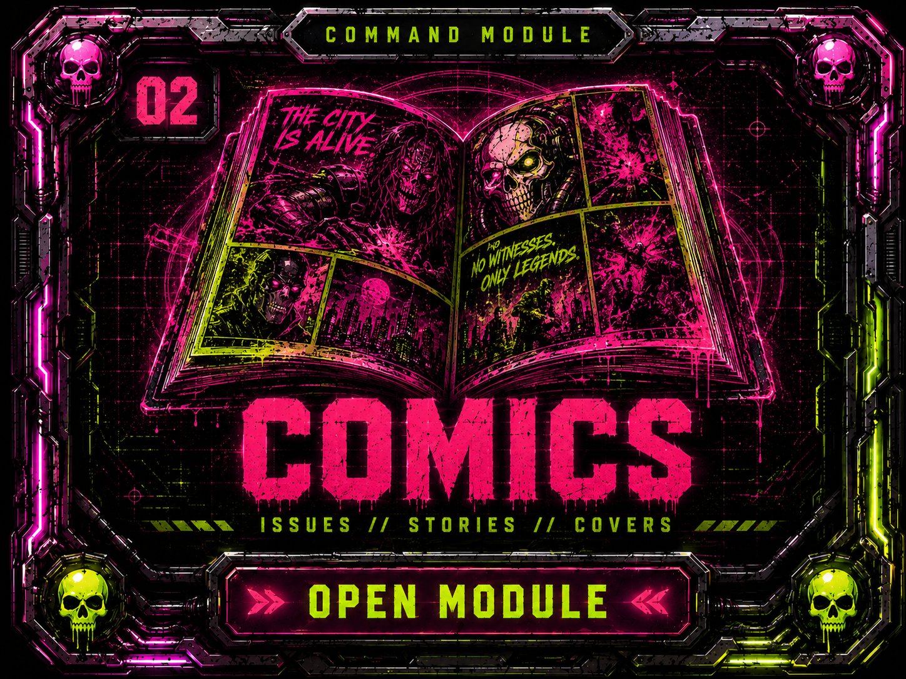
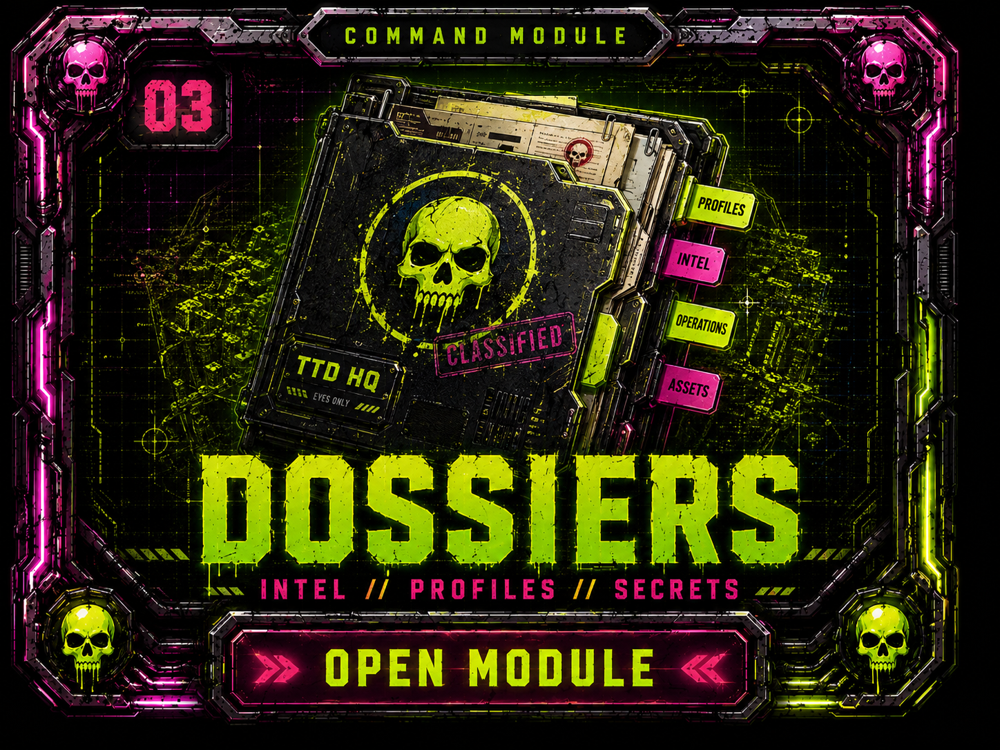
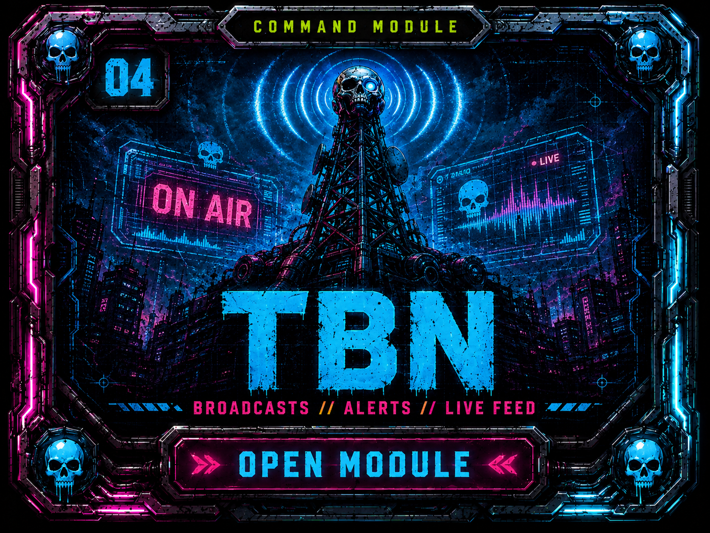
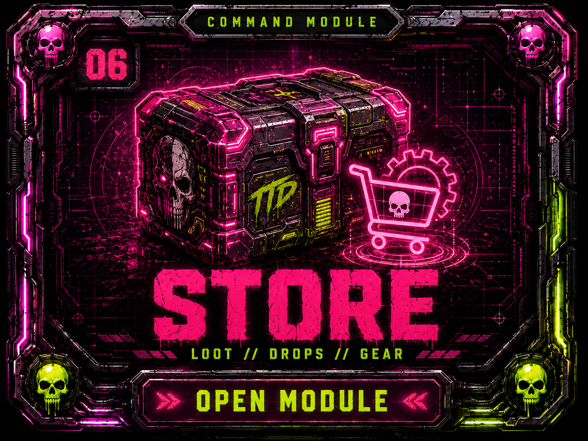
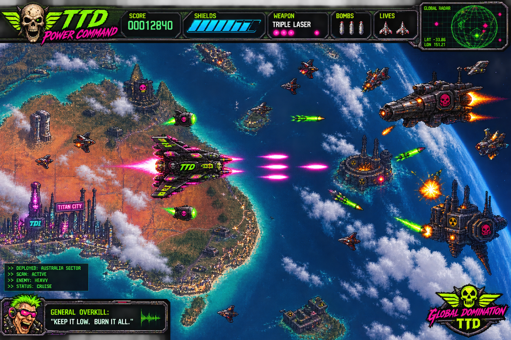
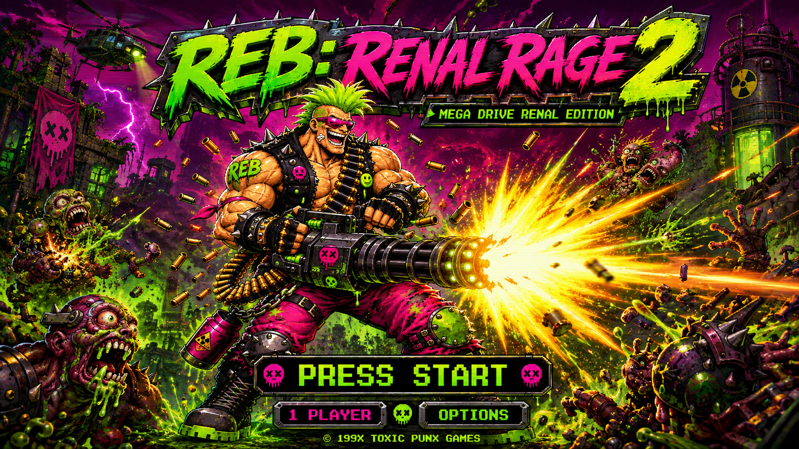

TACTICAL TERROR DIVISION // COMMAND NETWORK
ENTER TITAN CITY
Comics. Games. Districts. Dossiers. TBN broadcasts. Mutant loot. One network. No sensible supervision.

TACTICAL TERROR DIVISION // COMMAND NETWORK
Comics. Games. Districts. Dossiers. TBN broadcasts. Mutant loot. One network. No sensible supervision.

COMMAND MODULES

CITY MAP
COMICS
DOSSIERS
TBN ARCADE
ARCADE
LOOT VAULTCURRENT DEPLOYMENTS

TTD ARCADE // COMPLETE
Six hostile sectors. One Mayhem Machine. Command Fortress awaiting destruction.
DEPLOY →
TTD ARCADE // 8-STAGE CAMPAIGN
Heavy minigun fire and a medically irresponsible difficulty curve.
DRRRRRT →LIVE NETWORK